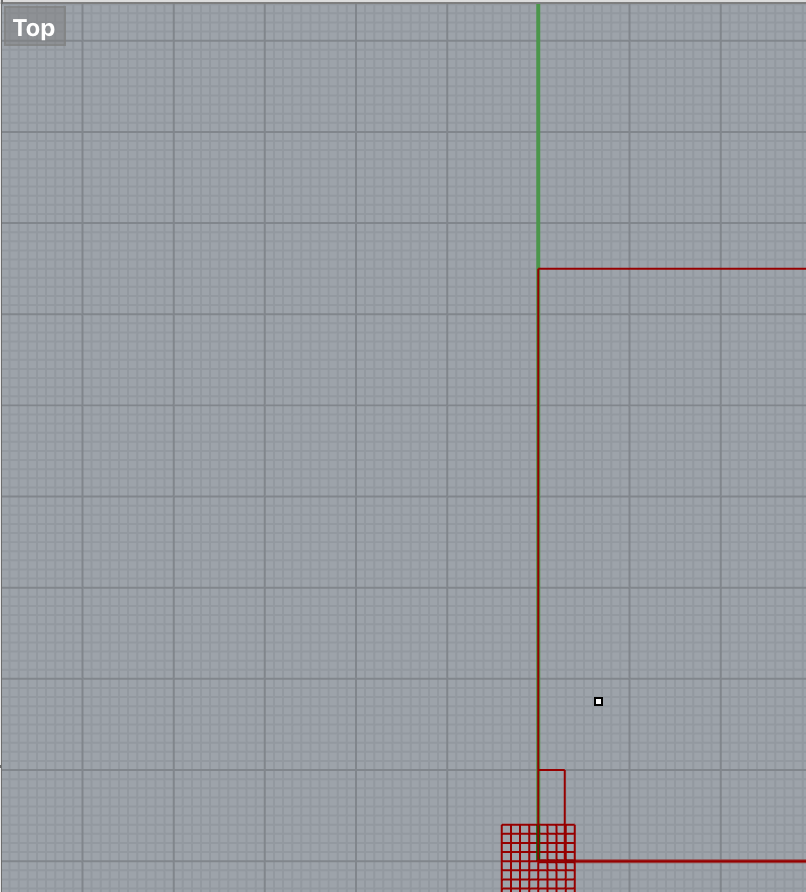

CAD Model + Fabricated Output
Native Vector File


I chose to create simple shapes to focus on learning Rhino/Grasshopper.The above images reflect my
final outcomes,a circle and hexagon with different thicknesses if materials (cardboard). I decided to add
making a second shape to test my understanding since I relied on help to learn the first go around.

I started with a creating a square using the Square component. However
I was unable to shift the square to have a centerpoint alignment
with the centerpoint of the xy radius on the Rhino canvas. A solve
may be starting with using the polygon component for the square, thinking,
a polygon is defined by radius and will generate a square from it's center point.
I think.


I abandoned the square and created a circle using the polygon component.
-Next I added a Radius parameter with a maximum of 65mm for width.
-And as follows:
-A Rectangle component
-a number slider each for X and Y dimensions attached with the X and Y ports of the Rectangle.
RELOCATING RECTANGLE ON THE SPHERE AND ABILITY TO RE-SIZE ELEMENTS
I was challenged to understand these next computational relationships which are required to create
radiating notches around the sphere—AND have the ability to change the geometry(rectangles and sphere)
simultaneously maintaining relativity of measurements or/and also— change dim's independently of one another.
With my colleagues help I achieved this as follows:
MOVING RECTANGLE:
-I created a Move parameter to adjust rectangle/notch to locate it at the top center of the circle.
-added a X/Y Vector component to tell the rectangle which direction to move along
-I added a Subtract parameter to which I attached the Circle geometry and the Y dimension of the Rectangle.
CHANGING DIMENSIONS RELATIVELY
-added a Multiply parameter
-and attached both a Number Slider and Number Parameter (which dictated the increment of the sldier)
to the above Multiply parameter.
-I joined the Multiply parameter to the X/Y Vector parameter.
At this point I attached the entire geometry to the Move parameter: attaching the Rectangle to the Geometry port
and the Vector to the T (motion) port. Which I then connected to a Polar Array parameter.
-A number slider was necessary to indictate the range of number of items in the polar array.
The last step was creating the negative space of the notch by connecting the Polar Array rectangles and the
Sphere to a Region Difference component.

Here is all the documentation for assignment 3!